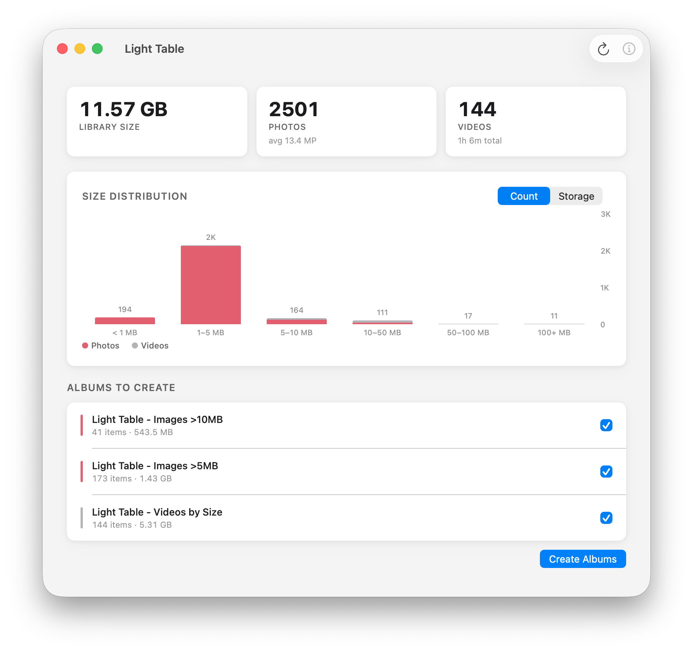
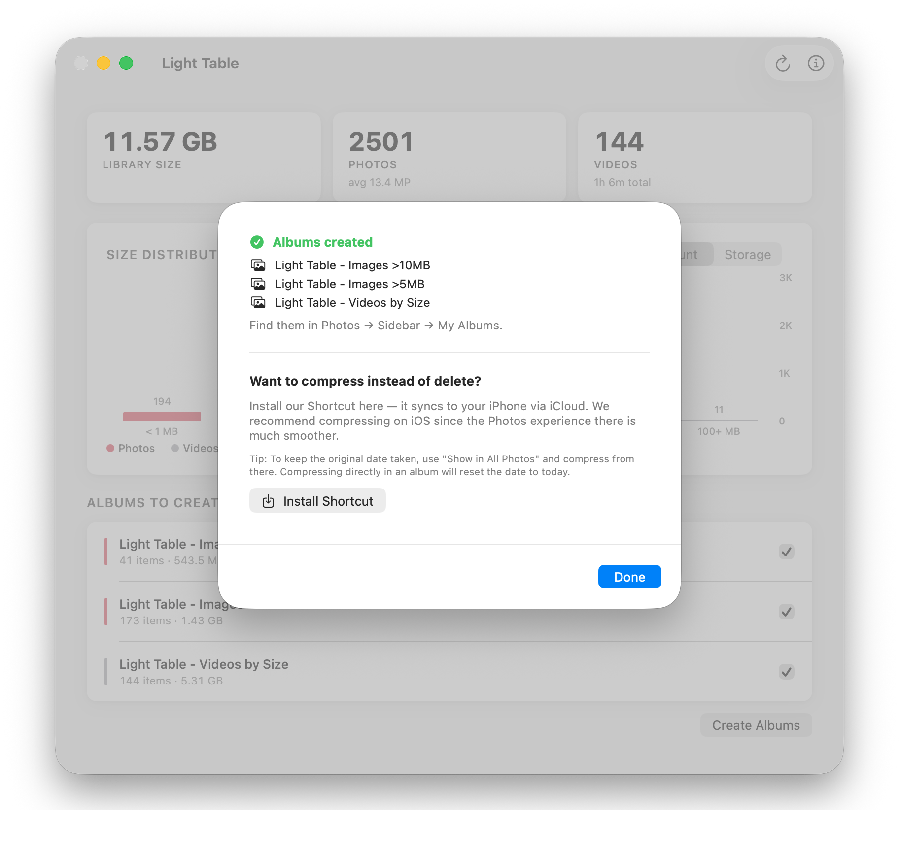

Scan your Photos library. See what's taking up space. Sorted by size — finally.
Download for Mac View on GitHub
Apple won't let you sort photos by file size. Not in Photos. Not in iCloud. Not anywhere. There is simply no way to know which files are devouring your storage.
And then you pay for a bigger iCloud plan. How convenient.
That's not a missing feature. That's a revenue strategy dressed up as simplicity.
Light Table scans your library, puts the largest files into albums sorted by size, so you can see exactly what's eating your storage and do something about it.

macOS will block it on first launch since this is an unnotarized app. Approve it in System Settings → Privacy & Security.